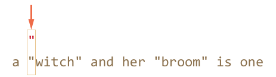
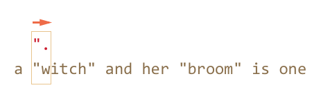
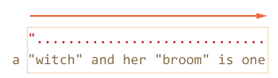
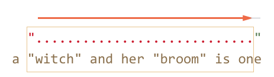
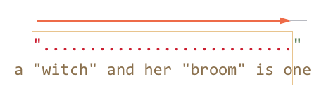
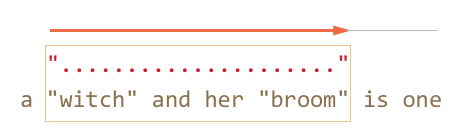
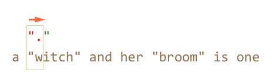
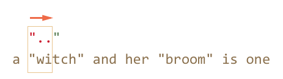
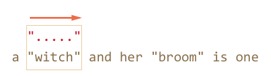
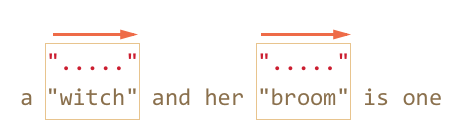

Квантификаторы – с виду очень простая, но на самом деле очень хитрая штука.
Необходимо очень хорошо понимать, как именно происходит поиск, если конечно мы хотим искать что-либо сложнее чем /\d+/.
Для примера рассмотрим задачу, которая часто возникает в типографике – заменить в тексте кавычки вида "..." (их называют «английские кавычки») на «кавычки-ёлочки»: «...».
Для этого нужно сначала найти все слова в таких кавычках.
Соответствующее регулярное выражение может выглядеть так: /".+"/g, то есть мы ищем кавычку, после которой один или более произвольный символ, и в конце опять кавычка.
Однако, если попробовать применить его на практике, даже на таком простом случае…
var reg = /".+"/g;
var str = 'a "witch" and her "broom" is one';
alert( str.match(reg) ); // "witch" and her "broom"…Мы увидим, что оно работает совсем не так, как задумано!
Вместо того, чтобы найти два совпадения "witch" и "broom", оно находит одно: "witch" and her "broom".
Это как раз тот случай, когда жадность – причина всех зол.
Жадный поиск
Чтобы найти совпадение, движок регулярных выражений обычно использует следующий алгоритм:
- Для каждой позиции в поисковой строке
- Проверить совпадение на данной позиции
- Посимвольно, с учётом классов и квантификаторов сопоставив с ней регулярное выражение.
Это общие слова, гораздо понятнее будет, если мы проследим, что именно он делает для регэкспа ".+".
-
Первый символ шаблона – это кавычка
".Движок регулярных выражений пытается сопоставить её на 0-й позиции в строке, но символ
a, поэтому на 0-й позиции соответствия явно нет.Далее он переходит 1ю, 2ю позицию в исходной строке и, наконец, обнаруживает кавычку на 3-й позиции:
 -
Кавычка найдена, далее движок проверяет, есть ли соответствие для остальной части паттерна.
В данном случае следующий символ шаблона:
.(точка). Она обозначает «любой символ», так что следующая буква строки'w'вполне подходит: -
Далее «любой символ» повторяется, так как стоит квантификатор
.+. Движок регулярных выражений берёт один символ за другим, до тех пор, пока у него это получается.В данном случае это означает «до конца строки»:
 -
Итак, текст закончился, движок регулярных выражений больше не может найти «любой символ», он закончил повторения для
.+и переходит к следующему символу шаблона.Следующий символ шаблона – это кавычка. Её тоже необходимо найти, чтобы соответствие было полным. А тут – беда, ведь поисковый текст завершился!
Движок регулярных выражений понимает, что, наверное, взял многовато
.+и начинает отступать обратно.Иными словами, он сокращает текущее совпадение на один символ:
Это называется «фаза возврата» или «фаза бэктрекинга» (backtracking – англ.).
Теперь
.+соответствует почти вся оставшаяся строка, за исключением одного символа, и движок регулярных выражений ещё раз пытается подобрать соответствие для остатка шаблона, начиная с оставшейся части строки.Если бы последним символом строки была кавычка
'"', то на этом бы всё и закончилось. Но последний символ'e', так что совпадения нет. -
…Поэтому движок уменьшает число повторений
.+ещё на один символ:Кавычка
'"'не совпадает с'n'. Опять неудача. -
Движок продолжает отступать, он уменьшает количество повторений точки
'.'до тех пор, пока остаток паттерна, то есть в данном случае кавычка'"', не совпадёт: -
Совпадение получено. Дальнейший поиск по оставшейся части строки
is oneновых совпадений не даст.
Возможно, это не совсем то, что мы ожидали.
В жадном режиме (по умолчанию) регэксп повторяет квантификатор настолько много раз, насколько это возможно, чтобы найти соответствие.
То есть, любой символ .+ повторился максимальное количество раз, что и привело к такой длинной строке.
А мы, наверное, хотели, чтобы каждая строка в кавычках была независимым совпадением? Для этого можно переключить квантификатор + в «ленивый» режим, о котором будет речь далее.
Ленивый режим
Ленивый режим работы квантификаторов – противоположность жадному, он означает «повторять минимальное количество раз».
Его можно включить, если поставить знак вопроса '?' после квантификатора, так что он станет таким: *? или +? или даже ?? для '?'.
Чтобы не возникло путаницы – важно понимать: обычно ? сам является квантификатором (ноль или один). Но если он стоит после другого квантификатора (или даже после себя), то обретает другой смысл – в этом случае он меняет режим его работы на ленивый.
Регэксп /".+?"/g работает, как задумано – находит отдельно witch и broom:
var reg = /".+?"/g;
var str = 'a "witch" and her "broom" is one';
alert( str.match(reg) ); // witch, broomЧтобы в точности понять, как поменялась работа квантификатора, разберём поиск по шагам.
-
Первый шаг – тот же, кавычка
'"'найдена на 3-й позиции: -
Второй шаг – тот же, находим произвольный символ
'.': -
А вот дальше – так как стоит ленивый режим работы
+, то движок не повторит точку (произвольный символ) ещё раз, а останавливается на достигнутом и пытается проверить, есть ли соответствие остальной части шаблона, то есть'"':Если бы остальная часть шаблона на данной позиции совпала, то совпадение было бы найдено. Но в данном случае – нет, символ
'i'не равен'"'. -
Движок регулярных выражений увиличивает количество повторений точки на одно и пытается найти соответствие остатку шаблона ещё раз:
Опять неудача. Тогда поисковой движок увеличивает количество повторений ещё и ещё…
-
Только на пятом шаге поисковой движок наконец находит соответствие для остатка паттерна:
 -
Так как поиск происходит с флагом
g, то он продолжается с конца текущего совпадения, давая ещё один результат:
В примере выше продемонстрирована работа ленивого режима для +?. Квантификаторы +? и ?? ведут себя аналогично – «ленивый» движок увеличивает количество повторений только в том случае, если для остальной части шаблона на данной позиции нет соответствия.
Ленивость распространяется только на тот квантификатор, после которого стоит ?.
Прочие квантификаторы остаются жадными.
Например:
alert( "123 456".match(/\d+ \d+?/g) ); // 123 4-
Подшаблон
\d+пытается найти столько цифр, сколько возможно (работает жадно), так что он находит123и останавливается, поскольку символ пробела' 'не подходит под\d. -
Далее в шаблоне пробел, он совпадает.
-
Далее в шаблоне идёт
\d+?.Квантификатор указан в ленивом режиме, поэтому он находит одну цифру
4и пытается проверить, есть ли совпадение с остатком шаблона.Но после
\d+?в шаблоне ничего нет.Ленивый режим без необходимости лишний раз квантификатор не повторит.
Так как шаблон завершился, то искать дальше, в общем-то нечего. Получено совпадение
123 4. -
Следующий поиск продолжится с
5, но ничего не найдёт.
Современные движки регулярных выражений могут иметь более хитрую реализацию внутренних алгоритмов, чтобы искать быстрее.
Однако, чтобы понять, как работает регулярное выражение, и строить регулярные выражения самому, знание этих хитрых алгоритмов ни к чему. Они служат лишь внутренней оптимизации способа поиска, описанного выше.
Кроме того, сложные регулярные выражения плохо поддаются всяким оптимизациям, так что поиск вполне может работать и в точности как здесь описано.
Альтернативный подход
В данном конкретном случае, возможно искать строки в кавычках, оставаясь в жадном режиме, с использованием регулярного выражения "[^"]+":
var reg = /"[^"]+"/g;
var str = 'a "witch" and her "broom" is one';
alert( str.match(reg) ); // witch, broomРегэксп "[^"]+" даст правильные результаты, поскольку ищет кавычку '"', за которой идут столько не-кавычек (исключающие квадратные скобки), сколько возможно.
Так что вторая кавычка автоматически прекращает повторения [^"]+ и позволяет найти остаток шаблона ".
Эта логика ни в коей мере не заменяет ленивые квантификаторы!
Она просто другая. И то и другое бывает полезно.
Давайте посмотрим пример, когда нужен именно такой вариант, а ленивые квантификаторы не подойдут.
Например, мы хотим найти в тексте ссылки вида <a href="..." class="doc">, с любым содержанием href.
Какое регулярное выражение для этого подойдёт?
Первый вариант может выглядеть так: /<a href=".*" class="doc">/g.
Проверим его:
var str = '...<a href="link" class="doc">...';
var reg = /<a href=".*" class="doc">/g;
// Сработало!
alert( str.match(reg) ); // <a href="link" class="doc">А если в тексте несколько ссылок?
var str = '...<a href="link1" class="doc">... <a href="link2" class="doc">...';
var reg = /<a href=".*" class="doc">/g;
// Упс! Сразу две ссылки!
alert( str.match(reg) ); // <a href="link1" class="doc">... <a href="link2" class="doc">На этот раз результат неверен.
Жадный .* взял слишком много символов.
Соответствие получилось таким:
<a href="....................................." class="doc">
<a href="link1" class="doc">... <a href="link2" class="doc">Модифицируем шаблон – добавим ленивость квантификатору .*?:
var str = '...<a href="link1" class="doc">... <a href="link2" class="doc">...';
var reg = /<a href=".*?" class="doc">/g;
// Сработало!
alert( str.match(reg) ); // <a href="link1" class="doc">, <a href="link2" class="doc">Теперь всё верно, два результата:
<a href="....." class="doc"> <a href="....." class="doc">
<a href="link1" class="doc">... <a href="link2" class="doc">Почему теперь всё в порядке – для внимательного читателя, после объяснений, данных выше в этой главе, должно быть полностью очевидно.
Поэтому не будем останавливаться здесь на деталях, а попробуем ещё пример:
var str = '...<a href="link1" class="wrong">... <p style="" class="doc">...';
var reg = /<a href=".*?" class="doc">/g;
// Неправильное совпадение!
alert( str.match(reg) ); // <a href="link1" class="wrong">... <p style="" class="doc">Совпадение – не ссылка, а более длинный текст.
Получилось следующее:
-
Найдено совпадение
<a href=". -
Лениво ищем
.*?, после каждого символа проверяя, есть ли совпадение остальной части шаблона.Подшаблон
.*?будет брать символы до тех пор, пока не найдётclass="doc">.В данном случае этот поиск закончится уже за пределами ссылки, в теге
<p>, вообще не имеющем отношения к<a>. -
Получившееся совпадение:
<a href="..................................." class="doc"> <a href="link1" class="wrong">... <p style="" class="doc">
Итак, ленивость нам не помогла.
Необходимо как-то прекратить поиск .*, чтобы он не вышел за пределы кавычек.
Для этого мы используем более точное указание, какие символы нам подходят, а какие нет.
Правильный вариант: [^"]*. Этот шаблон будет брать все символы до ближайшей кавычки, как раз то, что требуется.
Рабочий пример:
var str1 = '...<a href="link1" class="wrong">... <p style="" class="doc">...';
var str2 = '...<a href="link1" class="doc">... <a href="link2" class="doc">...';
var reg = /<a href="[^"]*" class="doc">/g;
// Работает!
alert( str1.match(reg) ); // null, совпадений нет, и это верно
alert( str2.match(reg) ); // <a href="link1" class="doc">, <a href="link2" class="doc">Итого
Квантификаторы имеют два режима работы:
- Жадный
- Режим по умолчанию – движок регулярных выражений повторяет его по-максимуму. Когда повторять уже нельзя, например нет больше цифр для
\d+, он продолжает поиск с оставшейся части текста. Если совпадение найти не удалось – отступает обратно, уменьшая количество повторений. - Ленивый
- При указании после квантификатора символа
?он работает в ленивом режиме. То есть, он перед каждым повторением проверяет совпадение оставшейся части шаблона на текущей позиции.
Как мы видели в примере выше, ленивый режим – не панацея от «слишком жадного» забора символов. Альтернатива – более аккуратно настроенный «жадный», с исключением символов. Как мы увидим далее, можно исключать не только символы, но и целые подшаблоны.
Комментарии
<code>, для нескольких строк кода — тег<pre>, если больше 10 строк — ссылку на песочницу (plnkr, JSBin, codepen…)